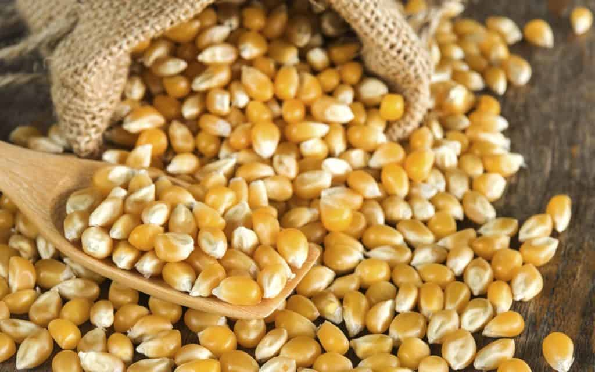

WHEAT
Wheat is cultivated in various parts of the world, becoming an important part of daily diets

OATS
Oats are often considered as “healthy grains” because their germ and bran are not removed.
RICE
Rice is the quintessential staple food from Asia, highly revered as an important food source and cultural element.

CORN
First grown by Native Americans, corn is an important food source aside of rice and wheat.